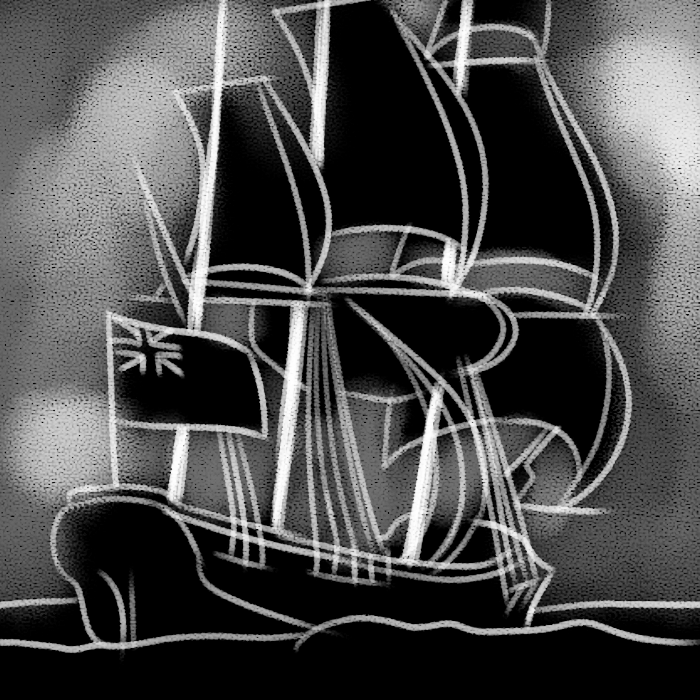

EA
by hinahina gray

In an article titled “Death in Hawai'i: The Epidemics of 1848-1849” by Schmitt and Nordyke published in Hawaiian Journal of History (2001), a low estimate of a quarter of the Native Hawaiian population was decimated by a series of epidemics due to introduced diseases. It affected kupuna - our elders - and our keiki - our children - the most.
breathe in | breathe out
hinahina's website